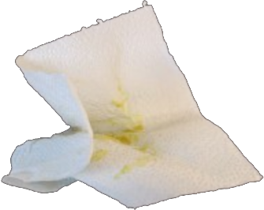
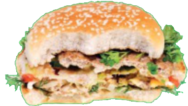
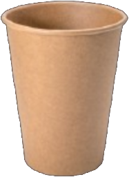
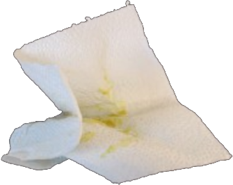
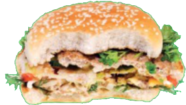
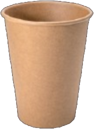

Restaffaldet brændes. Varmen fra ilden udnyttes til el og varme, som føres tilbage til husholdningerne. Sørg for at sortere så meget affald fra til genanvendelse som muligt, inden resten smides ud til restaffald. For at passe bedre på vores klima og miljø, skal vi reducere mængden af restaffald. Tak, fordi du sortere dit affald!
Mad & Restaffald skal i poser i beholderen, husk at binde knude på posen
Ris, pasta, ost, grøndsager og frugt, teblade, kaffegrums (med filtre og poser), fisk, kød, pålæg, ben, brød, kager, sovs og fedt
Madaffald omdannes til biogas der kan bruges som brændstof eller til produktion af el og varme. Restproduktet fra biogasanlægget køres ud på marker som gødning. På denne måde udnyttes både energien og næringen i madaffaldet. Bind en pose på din beholder når du får brug for nye poser. Bor du til leje, skal du kontakte viceværten.
Mad & Restaffald skal i poser i beholderen, husk at binde knude på posen